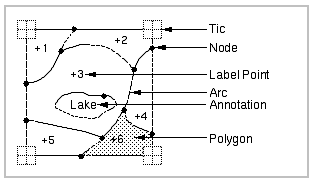
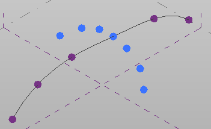
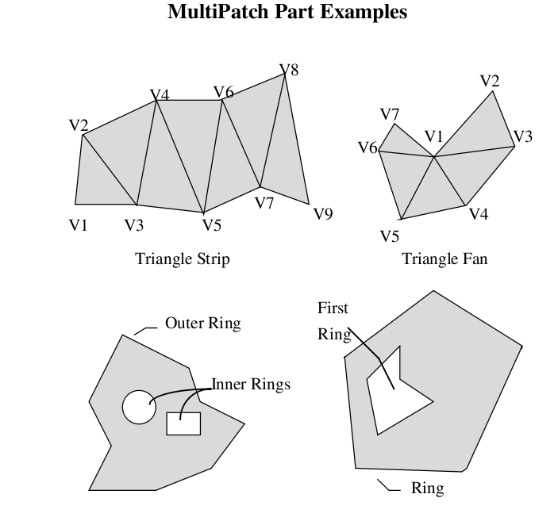
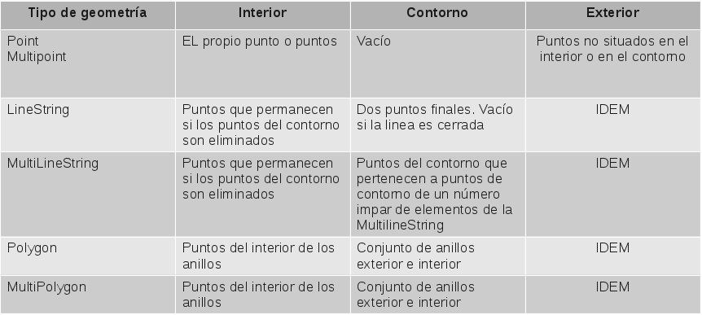
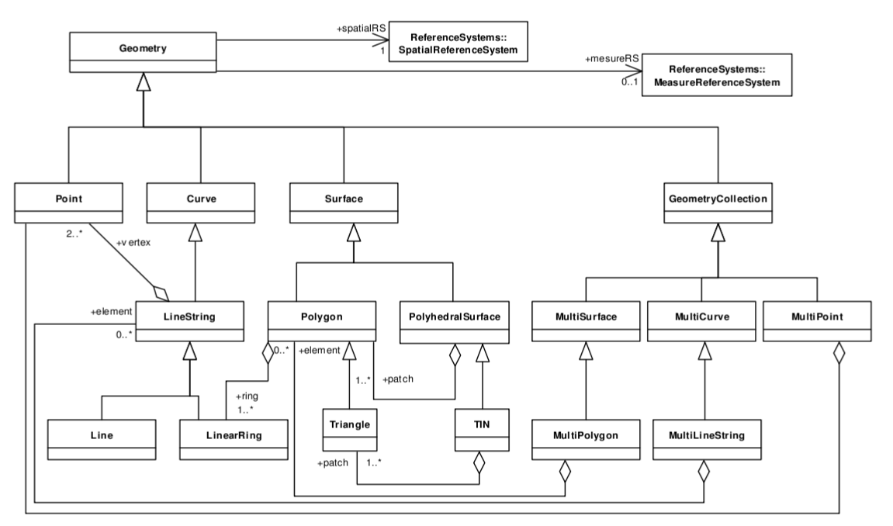
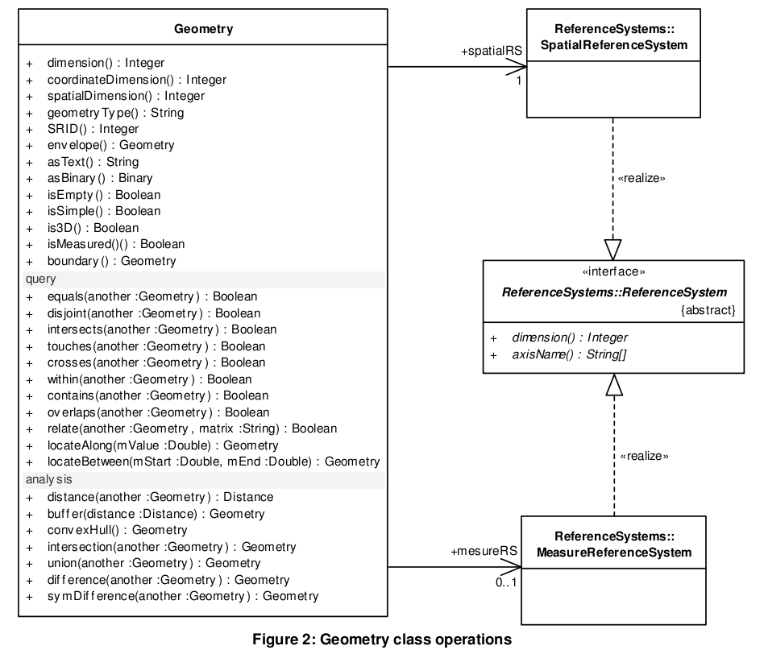
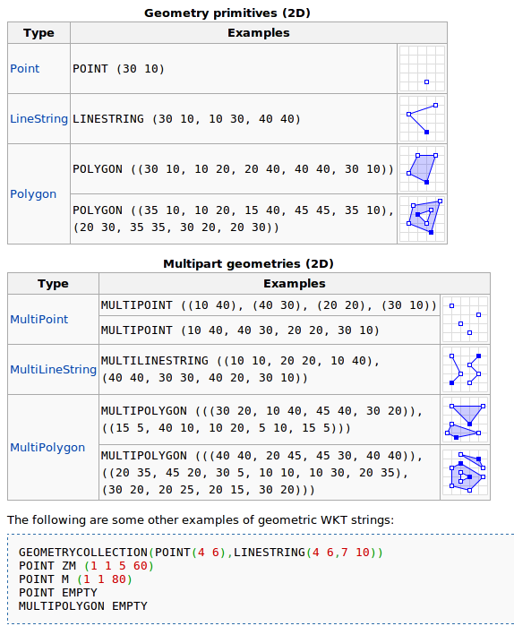
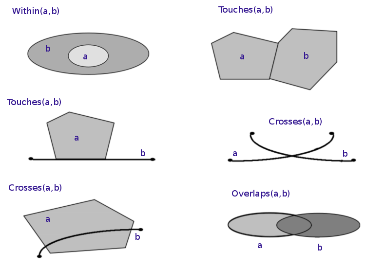
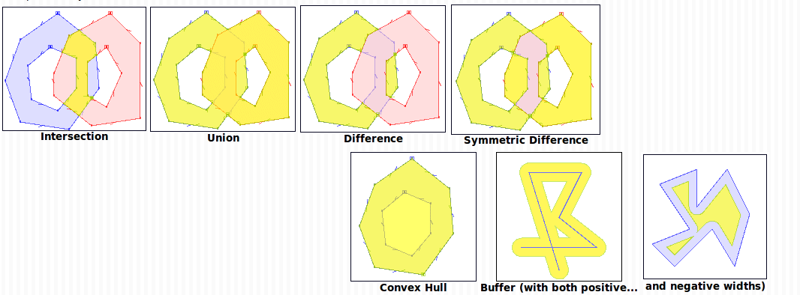

Simple Feature Model
Objetivos
-
Entender la necesidad por la que se creó el estándar Simple Feature Access de OGC, y otros estándares derivados: WKT.
-
Conocer las principales características estáticas del modelo OGC: la clase Geometry y sus subtipos: Point, LineString, Polygon, GeometryCollection, etc.
-
Conocer las principales características dinámicas del modelo OGC: predicados espaciales y funciones de análisis espacial.
-
Conocer la implementación SQL de éste modelo, seguida en mayor o menor grado por las principales bases de datos espaciales.
Incompatibilidades del modelo vectorial
Desde la aparición de los SIG, han ido apareciendo distintos paquetes de software que siguen el paradigma vectorial.
Estos paquetes han hecho sus propias implementaciones, a menudo no completamente compatibles unas con otras, de las tipos primitivos geométricos que sirven para modelar la componente espacial del dato geográfico.
- También han diferido en cómo han gestionado las relaciones de vecindad (topología) entre entidades geométricas, o en el comportamiento de éstas (funcionalidades de análisis).
-
Para poder usar información almacenada según un determinado “submodelo vectorial”, en un paquete de software que hace uso de otro submodelo vectorial distinto, sean necesarias la realización de operaciones de cambio de formato (transformación entre formatos).
Incompatibilidades del modelo vectorial
Arc/Info y el modelo vectorial de Cobertura.
Arc/Info fue lanzado en 1982 (aunque hoy se conserve el nombre para la gama superior del producto ArcGIS Desktop).
Introduce un subtipo del modelo vectorial.

Incompatibilidades del modelo vectorial
Autocad y el modelo CAD de los formatos DXF y DWG
Ofrecen un modelo “más completo”, en el que incorporan superficies matemáticas, de mayor complejidad que el simple modelado basado en puntos, líneas y polígonos.

Incompatibilidades del modelo vectorial
ArcView y el formato Shapefile.
Por los mismos desarrolladores de Arc/Info, fue lanzado en 1995.
A partir de la versión 2, introdujo el formato Shapefile.
El submodelo Shp maneja geometrías
múltiples, huecos, superficies irregulares
(multipatch), etc

Incompatibilidades del modelo vectorial
Tanta “fragmentación” en las implementaciones del modelo vectorial trae problemas

La necesidad de hacer una “transformación” o “mapeo” entre implementaciones del modelo vectorial, transformaciones que en ocasiones no pueden hacerse sin que se pierda parte de la información contenida.
La propia imposibilidad de utilizar la base de datos generada en un paquete desde otro producto software, en el caso de que los formatos no sean abiertos. Hemos visto que Shp o Dxf son formatos abiertos (Dxf parcialmente), pero DWG o DGN no.
El estándar SFA de OGC (ISO 19125)
Tiene como objetivo conseguir la “Interoperabilidad Semántica”: la reutilización de los datos vectoriales generados por distintos paquetes software, sin que se produzcan pérdidas por la falta de correspondencia entre las implementaciones del modelo vectorial empleadas.
La norma Simple Feature Access, (elevado a norma ISO bajo la identificación ISO 19125), es un modelo de datos orientado a objetos en el que se especifica cómo se debe implementar el paradigma vectorial para modelar la realidad con la información gestionada por un SIG.
El estándar SFA de OGC (ISO 19125)
OGC no solo definió una especificación abstracta del modelo vectorial, además:
-
Definió dos modelos de representación externa de la componente espacial del dato geográfico: los estándares WKT y WKB (elevados a norma ISO ISO/IEC 13249-3:2011).
- Un formato de intercambio de IG: GML
-
Un esquema “genérico” de cómo se debería implementar el modelo vectorial definido por la norma SFA en una base de datos SQL: SFA para SQL.
Dimensión
Una entidad puntual tendrá dimensión 0
Una entidad lineal tendrá dimensión 1
Una entidad superficial tendrá dimensión 2
ST_Dimension(geometría) devolverá el valor de la dimensión
Una geometry collection tendrá la dimensión más alta de las geometrías que la componen
DIMENSIÓN
No confundir la dimensión de una geometría con las dimensiones de las coordenadas que la componen. Esta indica la dimensión de las coordenadas de los vértices que las componen:
X,Y = 2
X,Y,Z = 3
…
ST_CoordDim(geometria) devuelve este valor de las dimensiones
Interior, contorno y exterior

INTERIOR, CONTORNO Y EXTERIOR
El estándar SFA de OGC (ISO 19125)

El estándar SFA de OGC (ISO 19125)
La clase clave de toda la jerarquía de clases del modelo es la clase abstracta Geometry.
La clase abstracta Geometry representa una estructura común (propiedades) y un comportamiento común (métodos) a todos los subtipos geométricos de la implementación que del paradigma vectorial hace el estándar ISO/OGC SFA.
Los métodos definidos por la clase Geometry, y que por tanto deben ser implementados por las clases que hereden esta clase abstracta, se pueden clasificar en tres tipos:
-
Métodos básicos.
-
Métodos para chequear relaciones espaciales entre objetos geométricos (predicados espaciales).
-
Métodos para realizar análisis espacial.
El estándar SFA de OGC (ISO 19125)

clase geometry
Clase Geometry: Los métodos básicos ofrecen funciones para obtener propiedades básicas de la geometría: si es simple o no, superficie y perímetro, coordenadas de sus vértices (en caso de que su dimensión sea superior a 0), mínimo rectángulo que la envuelve, etc.
Los métodos ST_AsText() y ST_AsBinary(), permiten obtener la representación externa de una instancia u objeto de la clase Geometry según los estándares WKT o WKB.
WKT
WKT es el acrónimo en inglés de Well Known Text, que se puede definir como una codificación o sintaxis diseñada específicamente para describir objetos espaciales expresados de forma vectorial. Los objetos que es capaz de describir son: puntos, multipuntos, líneas, multilíneas, polígonos, multipolígonos, colecciones de geometría y puntos en 3 y 4 dimensiones.
WKT
A efectos prácticos la sintaxis WKT consta de una descripción de los vértices que componen la geometría. Para que esta forma de especificar las geometrías tengan sentido deben de acompañarse de una indicación de la referencia espacial o proyección cartográfica utilizada en dicho vector.
WKT

WKB
WKB acrónimo de Well Known Binary es la variante de este lenguaje, pero expresada de forma binaria, también utilizada por los gestores espaciales, pero con la ventaja de que al ser compilada en forma binaria la velocidad de proceso es muy elevada.
Operaciones
ST_astext(geometria)
ST_binary(geometria)
ST_GeometryFromText(text,srid)
Definiciones
Point y Multipoint
Geometrias con 0 dimensiones
El contorno es el conjunto vacio
Una geometría Multipoint es simple si no tiene ningún punto repetido
definiciones
Linestring
Geometrias de 1 dimensión
Simple si no pasa por el mismo punto dos veces
Cerrada si su punto inicial y final es el mismo
El contorno si es cerrada es el conjunto vacio
El contorno si no es cerrada son su punto final e inicial
Si es simple y cerrada es un anillo (Ring)
definiciones
Multilinestring
Geometrías de 1 dimensión
Cerrada si todos sus elementos son cerrados
Si es cerrada su contorno es el conjunto vacio
definiciones
Polygon
Geometrías de 2 dimensiones
Contiene un único interior conectado
Tiene un anillo exterior y 0 o más anillos interiores
El contorno es un conjunto de lineas cerradas que se corresponden con sus contornos exterior e interior
definiciones
Multipolygon
El interior de cualquiera de las superficies que contiene no puede intersecar
El contorno de cualquiera de las superficies que contiene puede intersecar pero solo en un número finito de puntos
Son simples
métodos básicos
st_issimple(geometria)
st_isvalid(geometria)
st_isvalidreason(geometria)
st_isvaliddetail(geometria)
st_dimension(geometria)
st_isclosed(geometria)
st_numinteriorrings(geometria)
predicados espaciales
Clase Geometry: métodos para el chequeo de predicados espaciales.
Verifican el cumplimiento de determinados predicados geográficos entre dos geometrías distintas.
Los predicados geográficos toman dos geometrías como argumento, y devuelven un valor booleano que indica si ambas geometrías cumplen o no una determinada relación espacial
Las principales relaciones espaciales contempladas son equals, disjoint, intersects, touches, crosses, within, contains, overlaps.
predicados espaciales

análisis espacial
Clase Geometry: métodos para realizar análisis espacial.
Reciben una o más geometrías como parámetro, y devuelven una nueva geometría complemente distinta de las anteriores (o un valor número que mide una determinada propiedad).
SQL
El esquema SQL para implementar la norma SFA.
El estándar ISO 19125 da un paso más y define un esquema SQL que dé soporte al almacenamiento, recuperación, consulta y actualización de items geográficos con componente espacial, haciendo uso de un interfaz de llamadas SQL.
Es de destacar que ambas implementaciones (tipos primitivos o tipos geométricos) introducen dos tablas de metadatos del sistema: Geometry_Columns y Spatial_Reference_Sys.